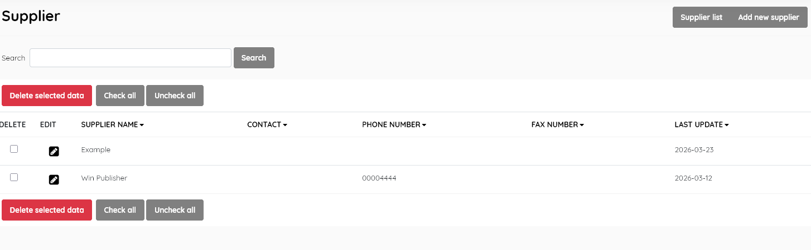
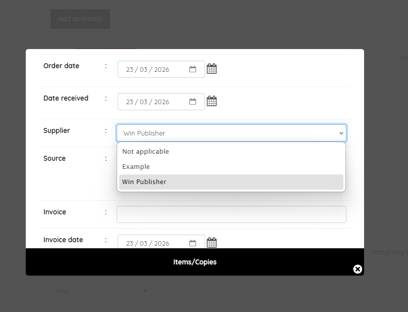
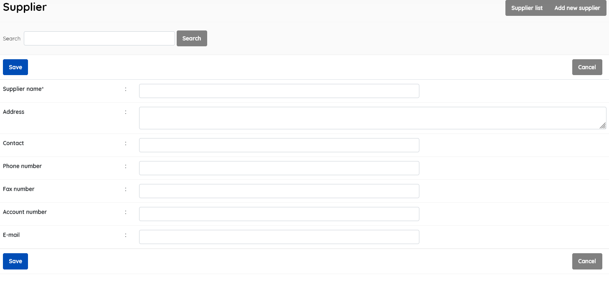

This look-up table contains the authoritative list of suppliers used in the system to record acquisitions.
This function enables management of the supplier master-file. It displays the list of suppliers e.g individual bookstores, Amazon etc. in the lookup table , with data for:
Supplier name
Contact
Phone number
Fax number
Last update (when the record was last edited)

This section is provided with facilities to DELETE, ADD, and EDIT supplier data.
To edit a supplier , double-click on the supplier , or single-click on the pencil (edit) icon.
When you edit a supplier, you will also have access to additional fields:
A search function allows you to search for entries by supplier keywords.
Results can be sorted by clicking on the field name at the top of each column.
Maintaining a list of suppliers facilitates ordering and reordering of resources, and creating an entry for a supplier in this master-file allows for the supplier to appear in the drop-down Supplier list when adding an Item (copy) of a title, during cataloguing.

This provides the facility to add suppliers directly to the data in the Senayan system. Suppliers’ information includes all of the fields listed above, with the exception of Last updated, which is done automatically when the Save button is clicked.

A supplier must be selected first, and after clicking the DELETE SELECTED DATA button a requester will appear, asking for confirmation.